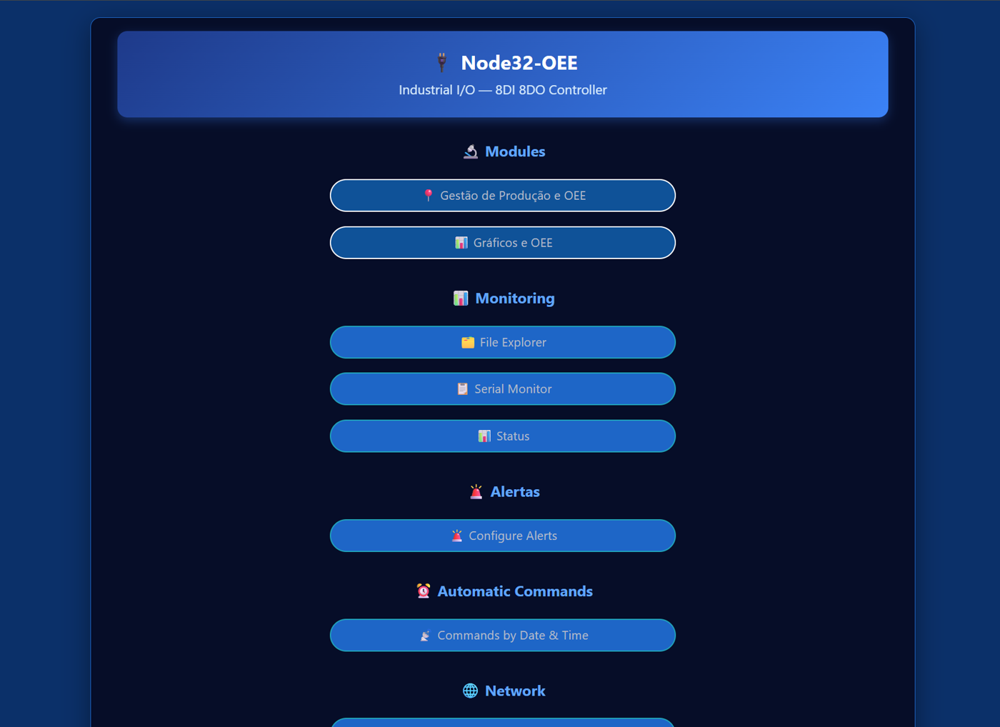
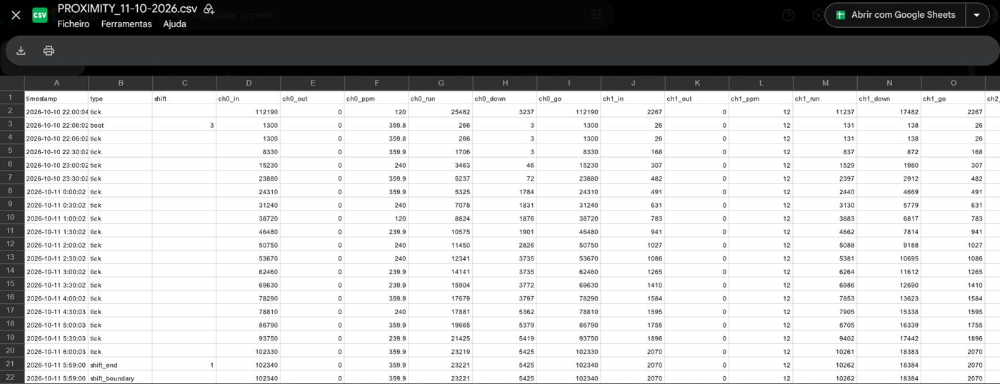

What it does
- Eight monitored inputs — inductive proximity sensors on the 8DI8DO, per-channel debounce, counts kept across reboots.
- OEE A×P×Q — availability, performance and quality computed from the shift window, not from a spreadsheet.
- Shifts — day-aligned or custom windows, with per-shift targets and a goal-vs-actual dashboard.
- Inactivity alerts — email when a machine stops producing for longer than the configured time.
- CSV history — daily files on SD, served from the page; the same data goes into the email report.
- Ethernet — wired PoE, no Wi-Fi, no mDNS; the board sits in the cabinet with the machine.


Install
- Flash
firmware.binover USB with the WebFlasher, or update an existing unit at/ota. Full guide: how to flash. - Plug the Ethernet cable; the board takes a DHCP lease (or set a static address).
- Open the IP shown on the serial monitor, log in as
root/rootand change both passwords. - Configure the sensors, the shift window and SMTP on the Proximity and Email pages.
Hardware
- Board — Waveshare ESP32-S3 8DI8DO (PoE). Other boards are locked out at compile time.
- Inputs — 8 isolated digital inputs for proximity sensors or dry contacts.
- Outputs — 8 relays, driven from the same page.
- Storage — microSD for the CSV history and the daily files.

